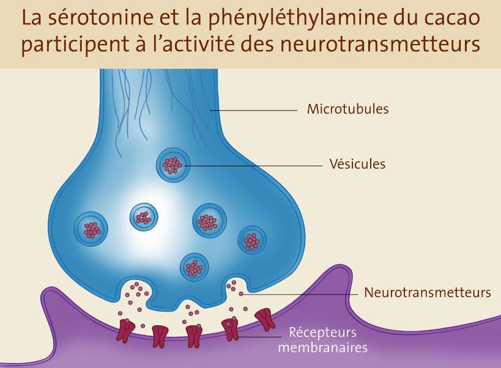

Les Bienfaits
Le chocolat possède d’innombrables vertus pour la santé. Tout d’abord il est très énergétique, grâce à sa composition en sucre et en matière grasse : 100 grammes de chocolat apportent 560 kcal. À titre de comparaison, 100 grammes de pain apportent 250 kcal (en moyenne, un homme a besoin de 2.400 kcal par jour)
Voici ci-dessous les principaux bienfaits du chocolat :
- Il stimule la mémoire et la concentration
Selon l’étude des chercheurs de l’Université de Syracuse sur les bienfaits d’un carré de chocolat noir, celui-ci serait en mesure d’améliorer les performances intellectuelles. Par exemple s’il est consommé avant un examen ou un test important, il apaise et réconforte. De plus, il booste l’efficacité de la mémoire visuelle, l’apprentissage de l’information et l’enregistrement. En effet le cacao se compose de flavonoïdes (antioxydants pouvant améliorer la concentration).
- Il est un puissant antidépresseur naturel
Manger du chocolat noir quand survient un coup de fatigue peut s’avérer très bénéfique. Certaines substances contenues dans le cacao contribuent à augmenter la production d’endorphine et donc à maintenir l’humeur.
- Il combat l’insomnie et favorise le sommeil
L’Université de Northumbia de l’Angleterre s’est penchée sur un autre bienfait du chocolat à savoir celui qui favorise le sommeil. C’est la sérotonine contenue dans le chocolat noir qui a des pouvoirs de relaxation. Consommer du chocolat avant d’aller au lit est donc une bonne idée.
- Il réduit la pression artérielle
Le chocolat est aussi bon pour le cœur puisque le cacao aide à réduire la tension artérielle. Une consommation régulière contribue à diminuer les risques de maladies cardiovasculaires de 37% et les risques d’accidents vasculaires cérébraux d’au moins 48%.
- Il détient des capacités antioxydantes
A l’instar du thé et du café, le cacao détient aussi des capacités antioxydantes. Les polyphénols présents dans le chocolat sont majoritairement des tanins et des flavonoïdes. Ces derniers sont réputés pour limiter le processus d’oxydation. Les effets de radicaux libres (atomes ou molécules instables cherchant à se lier à d'autres atomes et provoquant des réactions en chaîne) sont rapidement contrés lors de la consommation de chocolat.
- Il est un allié contre la maladie d’Alzheimer
Selon l’étude menée à l’Université de Harvard, le cacao favoriserait le maintien des capacités intellectuelles des troisièmes âges.
- Il améliore les performances sportives
En réduisant le stress, le chocolat diminue également la montée du cortisol (responsable des crampes et des baisses de performances).
Les méfaits
Cependant et comme il est coutume de l’entendre dire, le chocolat a de nombreux méfaits sur la santé :
Il est d’ors et déjà déconseillé aux personnes diabétiques d’en consommer (même si les diabétologues considèrent que du chocolat à plus de 70 % de cacao ne présente qu'un risque très limité).
De plus, le beurre de cacao favorise le relâchement du sphincter supérieur de l'estomac et entraîne des remontées gastriques dans l'œsophage.
En cas de coliques hépatiques, également l'ingestion de chocolat renforce l'influence néfaste des excès de sucre et de graisse.
Le chocolat génère des allergies ou plutôt des « fausses allergies alimentaires », duent à la présence de phényléthylamine et de tyramine.
Il y a dans le chocolat des oxalates qui absorbent le calcium (or ce dernier a pour but d’affermir les os). C’est pourquoi des répercussions négatives s’observent sur les os des très grands consommateurs.
Il contient aussi énormément de plomb or la présence du plomb dans le corps humain peut causer un déficit de développement neurologique chez les enfants.
Enfin, le risque d’addiction n’est pas à exclure dans le cas de consommation abusive.